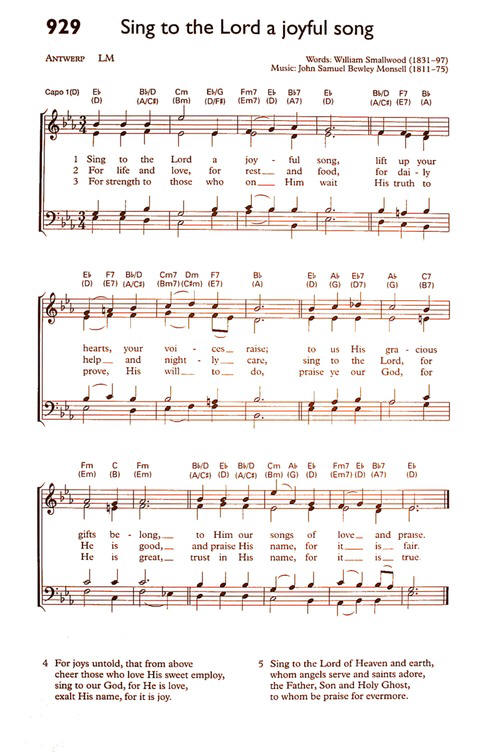

|
|
|
|
1. Be with us, gracious Lord, today; 2. Within these walls let holy peace, 3. May here be heard the suppliant’s sigh, 4. Here when the Gospel sound is heard, 5. Here may the dead be made to live, 6. Make this, O Lord, Thine own abode;
|
1.今将新堂奉献主前, |
|
https://www.mred365.cn/szxg/7605.html
https://www.mred365.cn/szxg/7606.html
|
|
|
|
|

.jpg)

https://www.youtube.com/watch?v=_pNd2eSSQh8 -
Be with Us, Gracious Lord, Today · Lucas Siquelli · William Smallwood
https://youtu.be/fdznkA9wdaQ
| Text: | Be with Us, Gracious Lord |
| Author: | C. D. Bell |
| Short Name: | Charles Dent Bell |
| Full Name: | Bell, Charles Dent, 1818-1898 |
| Birth Year: | 1818 |
| Death Year: | 1898 |
Bell, Charles Dent,

D.D., son of Henry Humphrey Bell, born at Warwick Lodge, Magherafelt, Ireland, on 10th February, 1818, and educated at the Royal Academy, Edinburgh, and the Royal School, Dungannon, and Trinity College, Dublin, graduating B.A., 1842, M.A., 1852, and D.D., 1878. Having taken Holy Orders, he was successively Curate of Hampton in Arden, and St. Mary's Chapel, Reading, and of St. Mary-in-the-Castle, Hastings, 1846; Incumbent of St. John's Chapel, Hampstead, 1854; Vicar of Ambleside, 1861; with Rydal, 1872; and Rector of Cheltenham, 1872. In 1869 he was also appointed Hon. Canon of Carlisle Cathedral. Dr. Bell's works include Night Scenes from the Bible, 1861; Hills that bring Peace, 1872; The Saintly Calling, 1873; Voices from the Lakes, 1877; Songs in the Twilight, 1881; Hymns for the Church and the Chamber, 1882; Songs in Many Keys, 1884; and for the Religious Tract Society, Angelic Beings, and their Nature and Ministry. He has also edited an Appendix to Dr. Walker's Cheltenham Psalms and Hymns, in 1873 (5th ed. 1878). To this Appendix were contributed:—
Tune Information
| Title: | ANTWERP (Smallwood) |
| Composer: | William Smallwood |
| Meter: | 8.8.8.8 |
| Incipit: | 55511 23432 22345 |
| Key: | D Major |
| Copyright: | Public Domain |
| Tune: | ANTWERP |
| Composer: | John Samuel Bewley Monsell, 1811-75 |
